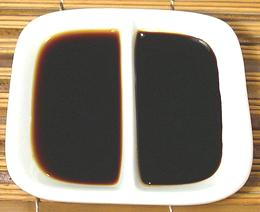

Soy Sauce

[Shoyu (Japan); Soya sauce (UK)]
For most cooks there are just two significant types, Light
(Japanese or Chinese) and Dark (Chinese). As with beer, "Lite"
is not the same as "Light", but probably indicates reduced salt. Also,
for celiacs, some Tamari type sauces are made with no grain, thus gluten
free. Additionally, you should know the difference between Naturally
Brewed (generally considered safe) and Artificial (rather questionable)
soy sauces.
In the photo, light is on the left, dark on the right. Of course to the
specialist and epicure the world of soy sauces is a lot more complicated.
More on Sauces & Condiments.
Naturally Brewed soy sauce is made from soy beans and usually
some grain such as wheat, fermented with salt, yeast, mold and bacteria.
It is generally considered safe, and being long fermented is free from
the toxins and hormones some non-fermented soy products are suspected
of.
Artificial soy sauce is made from hydrolized soy protein treated with
hydrochloric acid and colored with caramel. In the US such "soy sauce" is
generally sold in bottles with Chinese sounding names. Similar concoctions
are sold through health food emporiums as "liquid aminos". Scientific
investigation reveals these liquids often contain disturbing amounts of
toxins and carcinogens.
General & International
Light Soy Sauce
is a general term for what we in North
America consider "normal" or Japanese style soy sauce, exemplified by
"Kikkoman Soy Sauce" (no additional qualifiers except "Naturally
Brewed"). Used in all Asian cuisines and worldwide it is usually made
from a mix of soybeans and wheat, ranging from about half and half to
heavy on the wheat. Other grains may sometimes be used.Tamari
was formerly made from the run-off from manufacturing
miso (fermented bean paste) but today is more likely made pretty much
like regular soy sauce except with less grain and more beans. Some
versions use no grains and are "celiac safe".Low Sodium Soy Sauce
is a variation on light soy sauce. Many
prefer this as a "dipping" soy sauce for sushi and the like. It's value
in a low salt diet is zilch - it still has plenty of salt, but some
salt has been removed after normal fermentation.
Chinese
Chinese Light Soy Sauce
(shangchau, jiang qing)
is pretty similar to the standard Japanese soy sauce but usually with
more soybeans and less wheat, which makes it less sweet and also
somewhat darker in color. Japanese soy sauce can be substituted -
Kikkoman über alles!
Dark Soy Sauce
(laochou) is more used in Chinese
cuisine as a coloring than a flavoring and is often in combination with
light soy sauce. It is usually higher in soybeans and lower in wheat
than light soy sauce, is thicker in consistency and almost invariably
contains some sugar or molasses, but the sweetener should be at the
bottom of the ingredient list. Pearl River Bridge is the brand I
usually use.Dark Sweet Soy Sauce
is similar to dark soy sauce except
that molasses has been moved up above both soybeans and wheat. You
don't need to stock this because you can just mix some dark soy sauce
with molasses.Mushroom Flavored Dark Soy Sauce
is dark soy sauce with
"natural flavors and flavor enhancers". It may or may not be sweetened.
I never find it very mushroomy so I'd rather use regular dark soy sauce
and add some mushroom soaking liquid to the recipe.
Thick Soy Sauce
is dark soy sauce that has been thickened
with starch. It is used mainly for dipping.
Japanese
Japan is the land of many regional variations and quality grades of
just about everything, and soy sauce is no exception - but most aren't
common in North America. Soy Sauce is so important in Japan that Japan
has been called "a country with only one sauce".
Koikuchi
is the type familiar to us as "Japanese soy
sauce" and accounts for over 80% of production in Japan. It is made
from roughly equal amounts of soybeans and wheat.
Tamari
is still made by the traditional method as a
byproduct of miso production in limited quantity. Most products labeled
"tamari" are now made similar to other soy sauces and most contain some
wheat.Shiro
(white) is made mostly of wheat with very
little soybeans. It is sweeter than koikuchi and often used where the
light color is important to presentation appearance.Usukuchi
is made with the addition of sweet liquid
from fermented rice and is both saltier and lighter in color than
koikuchi.Saishikomi
(twice brewed) uses koikuchi instead of
brine in the fermentation process so is considerably stronger and
darker.
Korean
Soy sauce is as important in Korea as it is in Japan. Korea has two
main types, and a few minor ones.
Gan-Jang:
[Regular Soy Sauce] This
type was adopted from Japan around 1886 and has become the soy sauce
used for most Korean cuisine. It is also called Whe-Gan-Jang
(Japanese Gan-Jang).Guk-Gan-Jang:
[Soy Sauce for Soup]
This is the original Korean soy sauce, made for over 1000 years as
a byproduct of making Dwenjang, the Korean equivalent of
Japanese Miso. It is quite a bit saltier, has a simpler, less sweet
flavor, and a lighter color than regular soy sauce. It was originally
made from soy only, but today most includes some wheat, as most
Dwenjang now does. It is favored for soups to keep them a
lighter color, but is also often used for Korean vegetable dishes
(Namul) and Korean salads (Muchim). My local Korean
markets here in Los Angeles carry Sempio brand in two varieties, faked
up (yellow cap, 2015 US $4.49) and Naturally Brewed (black cap, 2015
US $6.69). The color is abut the same, but the naturally brewed has
noticeably better flavor. Subst: Korean cooking maven
Maangchi suggests using Thai Fish Sauce to keep colors light if you
don't have Soy Sauce for Soup (yes, they do use fish sauce in Korea).
Mat-Gan-Jang:
Various flavored soy sauces.
Taiwan
Taiwan, despite it's Chinese population, has gone pretty much over to
the Japanese style soy sauce.
Vietnam
In Vietnam, Fish Sauce takes the place of Soy Sauce in most recipes,
but Soy Sauce is used, particularly by Buddhist monks. The Vietnamese
prefer a soy sauce similar to the Chinese Light, considerably lighter
than Japanese soy sauce. The Korean "Soy Sauce for Soup" could be used
as a substitute.
Philippines
Filipino Toyo
is quite similar to Japanese soy sauce,
which can be used as a substitute.
Indonesian
Kecap Asin
is similar to Chinese light soy sauce which
can be used as a substitute. Kecap asin is not widely available in the
US.Kecap Manis
has palm sugar as the top ingredient and
is thick and very sweet. It is widely available in the US, particularly
Heinz' ABC brand.
Malaysia & Singapore
Kicap Cair
is similar to Indonesian Kecap Asin or
Chinese light soy sauce.Kicap Lemak
is similar to Indonesian Kecap Manis but
with a whole lot less sugar. Maybe cut Kecap Manis half and half with
Chinese dark soy sauce as a substitute.
Health & Nutrition
Soy Sauce is high in salt. Low Sodium (Reduced Salt) Soy Sauce (salt
is removed after manufacture) is still pretty high in salt, so useless
to those trying to reduce blood pressure. Medical sources say reducing
sodium has little effect until nearly all salt is eliminated from the
diet. In my non-medical opinion this sounds like treating the symptoms,
not the disease, by creating an imbalance so extreme it happens to
counter symptoms of the real problem. As usual I point to demographics.
Japan, a very high salt culture, has traditionally had 1/3 to 1/5 the
heart disease rate in North America, but this is slowly changing as
the Japanese adopt a more Western diet and sedentary lifestyle.
Because naturally brewed Soy Sauce is a long fermented product, it
is free from the toxins and hormone-like substances some soy products
have been suspected of, and is generally considered safe. Artificial
soy sauces and "liquid aminos" however, made from soy protein and
hydrochloric acid, are chemical swills often containing known toxins
and carcinogens.
bp_soyz 080923 - www.clovegarden.com
©Andrew Grygus - agryg@clovegaden.com - Photos on this
page not otherwise credited are © cg1 -
Linking to and non-commercial use of this page permitted